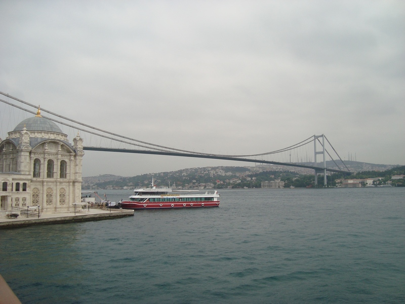
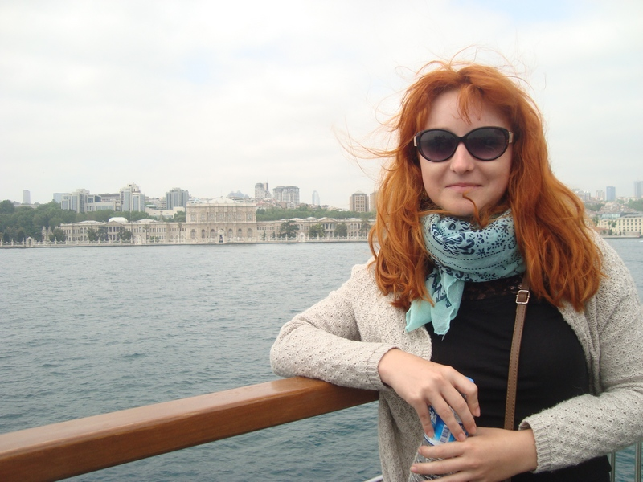
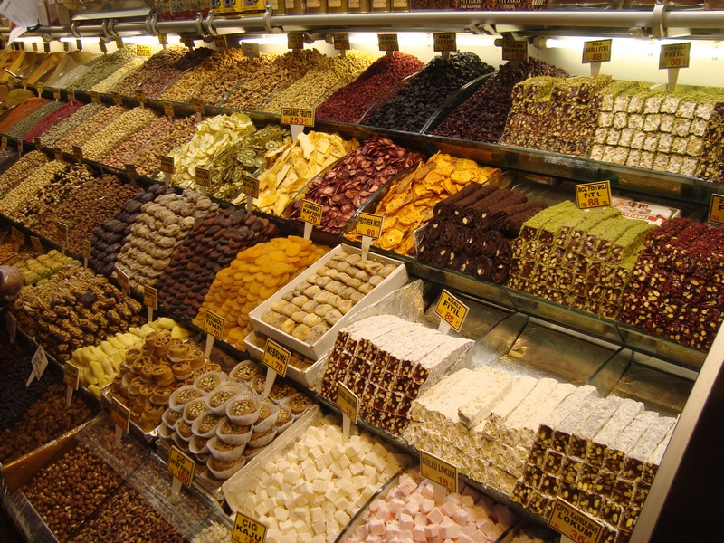
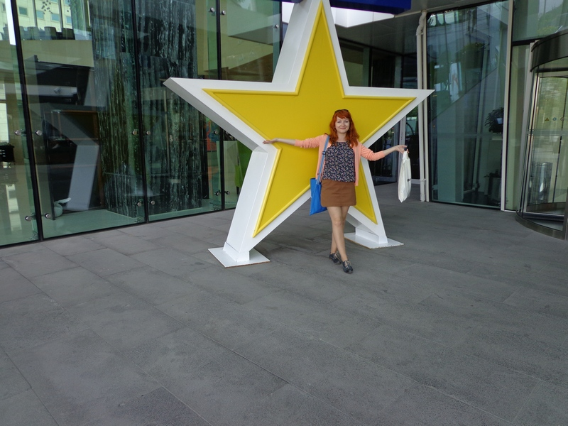

Přestože moje loňská služební cesta do Alicante nasadila laťku pěkně vysoko, letošní konference v Istanbulu jí měla být nemalou konkurencí - vždyť poprvé v životě uvidím na vlastní oči Asii!!! O dojmy z této krátké cesty bych se s vámi ráda podělila v několika následujících článcích. A rovnou asi začnu tím, na co se všichni nejčastěji ptají a co by vám mohlo být užitečnou informací, pokud byste se chtěli do Istanbulu také vypravit.

Most mezi Evropou a Asií
Cesta
Letěli jsme tam i zpět s Turkish Airlines a můžu říct, že to byly po všech směrech asi nejlepší lety v mém životě. Svůj podíl na tom jistě mělo i krásné počasí. Servis během letu byl také perfektní a hlavně jsem snad poprvé dostala v letadle opravdu moc dobré jídlo :D! Letěli jsme z Vídně a cesta trvala necelé 2 a půl hodiny. Pozor na to, že Istanbul leží v jiném časovém pásmu - je potřeba si přeřídit hodinky o 1 hodinu dopředu.
Doprava
První dojem: totální chaos. Cestou z letiště do hotelu jsme přestupovali pouze jednou, nicméně nám trvalo pěkně dlouho, než jsme se zorientovali, kterým směrem vlastně máme jet. Tramvaje i metro byly téměř neustále přeplněné lidmi a cesta se zavazadly v tom parném horku byla docela boj. Městská hromadná navíc zdaleka nepokrývá celé město a jsou místa, kam je prostě nejlepší dojít pěšky. Další perličkou je to, že v Istanbulu neexistují papírové jízdenky. Jezdí se na žetony, které vás pustí přes turniket. Navíc nejsou přestupní, což činí z místní městské hromadné celkem drahou záležitost – 1 žeton vás vyjde na 4 turecké liry, čili asi 40 Kč. Každopádně si na začátku cesty člověk připadá trochu jako v kasínu, se všemi těmi žetony v kapse :D. Nicméně super na městské hromadné v Istanbulu je to, že se vztahuje i na cestování po moři a plavba okolo pobřeží, která je rozhodně super zážitkem, vás tak přijde na hubičku.

Plavba Bosporem
Gastro
Na lokální kuchyni jsem se docela těšila a až na jednu extra pálivou tortillu (která vysloveně neměla být „spicy“!) byly všechny mé gastro-zkušenosti jen pozitivní. Hotelové snídaně, které všichni na Booking.com hrozně chválili, mi teda zas až tak úžasné nepřišly, i když naložené olivy a různé druhy sýrů byly super. Ovšem konferenční rautíky, to byla má zhouba! Ochutnala jsem všechno možné od baklavy přes crème brûlée až po vyloženě lokální speciality. Taky mi tu moc chutnala úprava kuskusu a losos.
A když jsme u těch ryb, na večeři jsme chodívali do jednoho nedalekého podniku s otevřenou kuchyní, kde jsme si mohli vybrat rybu, kterou přímo před námi připravili a podávali jen s citronem, cibulí a pečivem. I když jsem vůbec nerozuměla tomu, co vlastně jím, bylo to vynikající :-)! Další super vychytávkou, kterou jsme si v Istanbulu zamilovali, byli „pojízdní odšťavňovači“, kteří přímo na ulici (zpravidla jste na ně mohli narazit na tržišti) prodávali čerstvě vylisovanou ovocnou šťávu. Dala se sehnat už za 1 liru a byla vážně osvěžující! Vyzkoušeli jsme třeba i granátové jablko, ale mně osobně nejvíc chutnala pomerančová klasika. A pochopitelně nemůžu opomenout lokum, tureckou specialitu, bez které prostě nemůžete odjet domů. Jedná se o sladké želé kostičky, zpravidla obalené v cukru nebo kokosu s různými příchutěmi a náplní, třeba s pistáciovými oříšky. Na tržišti jsme ochutnali všemožné druhy a bylo fakt těžké rozhodnout se, které jsou nejlepší.

Turecké sladkosti - má zhouba!
A ještě malá perlička na závěr – kvůli hojně zastoupené populaci muslimů tu na alkohol člověk narazí jen zřídka. Ve spoustě restaurací ho vůbec nemají v nabídce. A hlavně ho k našemu nemalému zklamání vůbec nenabízeli na konferenci. Skandální :-)!
Ceny
Pokud jsme v Maďarsku z cen umazávali jednu nulu, tady v Turecku je potřeba si jednu nulu doplnit, aby Vám vyšla přibližná suma v českých korunách. I tak je to velice levná země. Místním platidlem jsou turecké liry. Najíst se dá v různých cenových hladinách, jako všude jinde, ale fajn večeři nebo oběd pořídíte i do 10 lir. A na každém istanbulském rohu narazíte na prodavače slaných preclíků, které stojí 1 liru a zaženou akutní hlad naprosto vždy :). Velice levně se tu dá pořídit i kožená obuv (naštěstí už jsem neměla místo v kufru o:-)…) a samozřejmě veškeré oblečení. V sousedství hotelu, kde se konference konala, se nachází obrovský obchoďák, kde jsme se den před odjezdem pěkně rozšouply :D…

Před obchoďákem, obtěžkána nákupními taškami :D
To by myslím na úvod jako shrnutí základních informací stačilo. Pokud by vás zajímalo ještě něco, klidně se ptejte v komentářích. A příště už vám ukážu i nějaké ty památky a istanbulské zajímavosti :-).